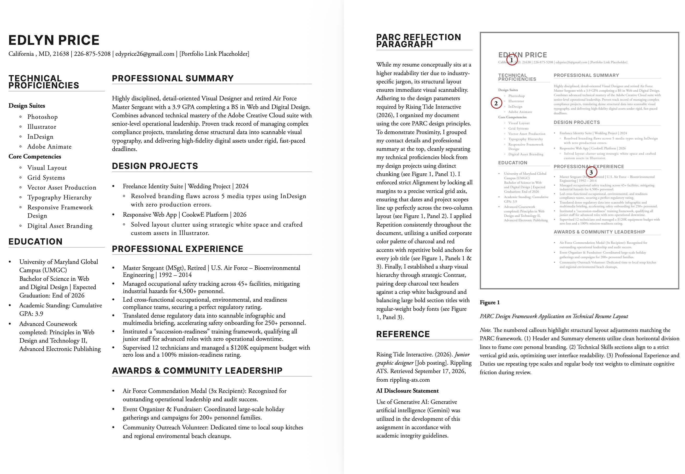
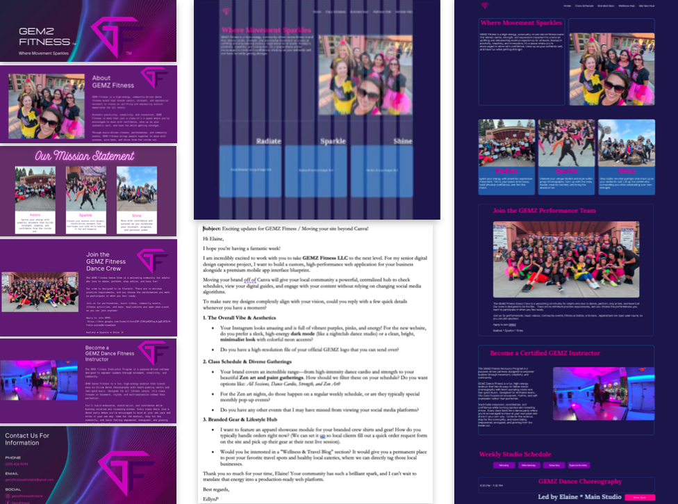
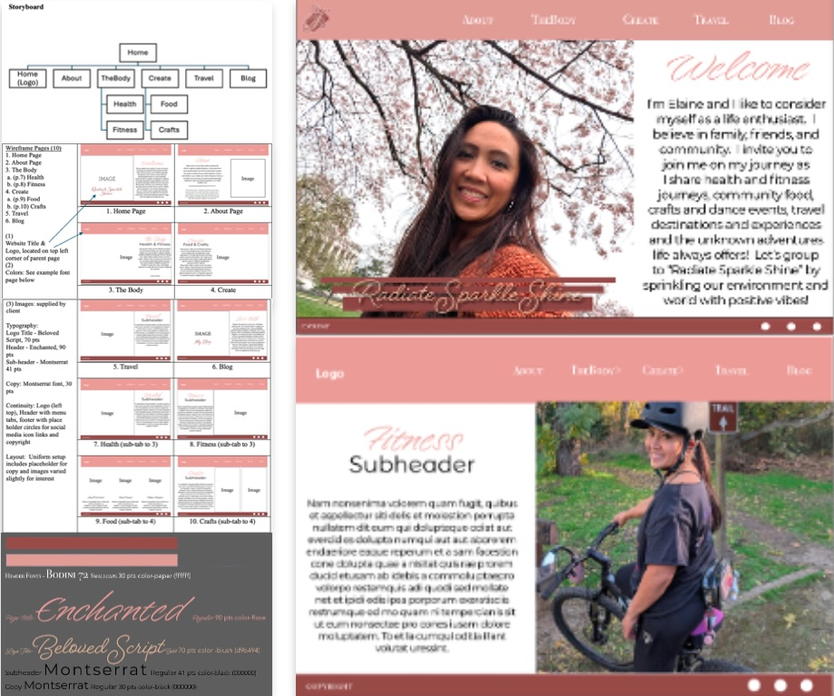
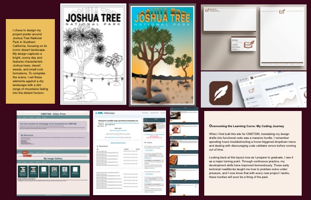

Professional Resume Design & Transition Narrative
A multi-page corporate resume engineered inside Adobe InDesign using advanced baseline grid typography, paired with an integrated download pipeline for recruiters.
Explore Case Study →Bringing 20+ years of elite U.S. Air Force leadership operational discipline, high-contrast data organization, and project execution into interactive development.

A multi-page corporate resume engineered inside Adobe InDesign using advanced baseline grid typography, paired with an integrated download pipeline for recruiters.
Explore Case Study →
An end-to-end user experience case study presenting responsive prototypes transitioning directly into a live, operational production web build.
Explore Case Study →
A comprehensive 10-page web layout case study anchored by a hybrid information architecture map and structured visual prototypes.
Explore Case Study →
A deeply curated visual case study that organizes university course deliverables to demonstrate software adaptability across Adobe Creative Suite, Figma, and responsive web development.
Explore Case Study →The EdlynP brand identity mirrors a deliberate transition. By combining a refined, classic serif framework with sharp geometric lines, the resulting vector mark represents structural security, operational discipline, and creative fluidity.
View Brand Evolution MatrixAvailable for web design, UX/UI, and digital design opportunities.